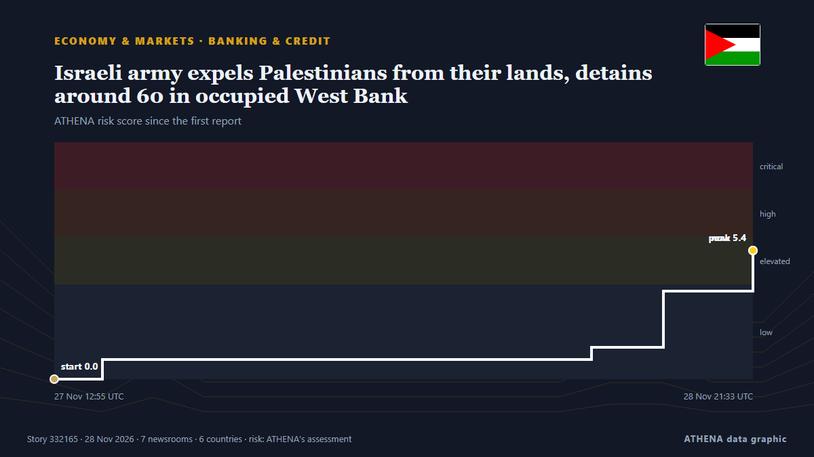

Οικονομία, Χρηματοοικονομικά & Αγορές
ΧορηγούμενοΠαρουσιάζεται από  Cybernetics and Artificial Intelligence Lab Welcome to the Cybernetics and Artificial Intelligence Laboratory, established at the Department of Business Administration of the National and Kapodistrian University of Athens. The lab is headed by Professor Dimitrios Thomakos. The lab aims to do research that can be published in top venues. Our research uses tools and methods of Artificial Intelligence, and lies in the following areas: - Forecasting - Decision making - Cyber security - Finance We are always looking forward to collaborating with exceptional students!
Cybernetics and Artificial Intelligence Lab Welcome to the Cybernetics and Artificial Intelligence Laboratory, established at the Department of Business Administration of the National and Kapodistrian University of Athens. The lab is headed by Professor Dimitrios Thomakos. The lab aims to do research that can be published in top venues. Our research uses tools and methods of Artificial Intelligence, and lies in the following areas: - Forecasting - Decision making - Cyber security - Finance We are always looking forward to collaborating with exceptional students!
Οι τίτλοι των ειδήσεων παρουσιάζονται στα αγγλικά, όπως δημοσιεύτηκαν.
Παρακολούθηση αγορών - επίσημα στοιχεία
Προς τα πού κινούνται τα επίσημα μεγέθη των αγορών - άνοδος, πτώση ή σταθερότητα - με την τελευταία επίσημη τιμή και την ημερομηνία της, και οι ειδήσεις αγορών που επιβεβαίωσε το ATHENA. Επίσημα στοιχεία, όχι τιμές σε πραγματικό χρόνο.
Ενέργεια
| 1 ημέρα | 1 εβδομάδα | 1 μήνας | Επίσημη τιμή | |
|---|---|---|---|---|
| Πετρέλαιο Brent | ▲ | ▼ | ▼ | $91,80/bblΕπίσημα στοιχεία της 24 Νοε 2026 |
| Πετρέλαιο WTI | ▲ | ▼ | ▼ | $82,24/bblΕπίσημα στοιχεία της 24 Νοε 2026 |
| Φυσικό αέριο ΗΠΑ (Henry Hub) | ▲ | ▲ | ▲ | $3,30/MMBtuΕπίσημα στοιχεία της 24 Νοε 2026 |
| Ευρωπαϊκό φυσικό αέριο (1 μήνας · 3 μήνες · 12 μήνες)(1Μ · 3Μ · 12Μ) | ▲ | ▲ | ▲ | $25,49/MMBtuΕπίσημα στοιχεία της 1 Σεπ 2026 |
| Άνθρακας (Αυστραλία) (1 μήνας · 3 μήνες · 12 μήνες)(1Μ · 3Μ · 12Μ) | ▲ | ▲ | ▲ | $153,84/tΕπίσημα στοιχεία της 1 Σεπ 2026 |
Τρόφιμα
| 1 μήνας | 3 μήνες | 12 μήνες | Επίσημη τιμή | |
|---|---|---|---|---|
| Σιτάρι | ▲ | ▲ | ▲ | $246,85/tΕπίσημα στοιχεία της 1 Σεπ 2026 |
Χρηματιστήρια ΗΠΑ
| 1 ημέρα | 1 εβδομάδα | 1 μήνας | Επίσημη τιμή | |
|---|---|---|---|---|
| S&P 500 | ▼ | ▼ | ▼ | Μόνο κατεύθυνση (δείκτης © Cboe)Επίσημα στοιχεία της 25 Νοε 2026 |
| Nasdaq Composite | ▲ | ▲ | ▼ | Μόνο κατεύθυνση (δείκτης © Cboe)Επίσημα στοιχεία της 27 Νοε 2026 |
Επιτόκια, κίνδυνος και δολάριο
| 1 ημέρα | 1 εβδομάδα | 1 μήνας | Επίσημη τιμή | |
|---|---|---|---|---|
| Απόδοση 10ετούς ομολόγου ΗΠΑ | ▼ | ▼ | ▼ | 4,85 %Επίσημα στοιχεία της 25 Νοε 2026 |
| Μεταβλητότητα αγοράς (VIX) | ▼ | ▼ | ▲ | Μόνο κατεύθυνση (δείκτης © Cboe)Επίσημα στοιχεία της 26 Νοε 2026 |
| Δολάριο ΗΠΑ, ευρύς δείκτης | ▬ | ▲ | ▲ | 123,60Επίσημα στοιχεία της 20 Νοε 2026 |
Το ευρώ έναντι άλλων νομισμάτων
| 1 ημέρα | 1 εβδομάδα | 1 μήνας | Επίσημη τιμή | |
|---|---|---|---|---|
| EUR/USD | ▼ | ▼ | ▼ | 1,0957 USDΕπίσημα στοιχεία της 27 Νοε 2026 |
| EUR/GBP | ▼ | ▼ | ▬ | 0,8350 GBPΕπίσημα στοιχεία της 27 Νοε 2026 |
| EUR/CHF | ▬ | ▼ | ▼ | 0,9157 CHFΕπίσημα στοιχεία της 27 Νοε 2026 |
| EUR/JPY | ▬ | ▲ | ▼ | 174,81 JPYΕπίσημα στοιχεία της 27 Νοε 2026 |
| EUR/CNY | ▼ | ▼ | ▼ | 7,2912 CNYΕπίσημα στοιχεία της 27 Νοε 2026 |
| EUR/TRY | ▬ | ▲ | ▲ | 55,647 TRYΕπίσημα στοιχεία της 27 Νοε 2026 |
| EUR/NOK | ▼ | ▼ | ▲ | 10,6850 NOKΕπίσημα στοιχεία της 27 Νοε 2026 |
Πηγές: Υπηρεσία Ενεργειακών Πληροφοριών ΗΠΑ (πετρέλαιο, φυσικό αέριο ΗΠΑ), ΔΝΤ (ευρωπαϊκό φυσικό αέριο, άνθρακας, σιτάρι), Υπουργείο Οικονομικών και Federal Reserve των ΗΠΑ (απόδοση 10ετούς, δείκτης δολαρίου) και Cboe (VIX), S&P Dow Jones Indices (S&P 500), Nasdaq (Nasdaq Composite), μέσω FRED (Federal Reserve Bank of St. Louis)· ισοτιμίες αναφοράς του ευρώ © Ευρωπαϊκή Κεντρική Τράπεζα. Οι τιμές είναι οι τελευταίες επίσημες, με την ημερομηνία τους - όχι τιμές σε πραγματικό χρόνο. Τις κατευθύνσεις τις υπολογίζει το ATHENA.
Κρυπτονομίσματα, ETF και μετοχές στις ειδήσεις
- Bank of Japan Explores Bringing Stablecoins and Tokenized Finance Into Traditional Banking Κίνδυνος 0.6 28 Νοε
- Trump shares Thanksgiving post claiming GDP figures released before midterm elections were 'fake' Κίνδυνος 1.7 28 Νοε
- Binance lifts withdrawal suspension after $6.3 billion crypto heist Κίνδυνος 3.5 28 Νοε
- Musk pledges two SpaceX shares for every US child Κίνδυνος 1.6 28 Νοε
- What’s open and closed on Black Friday 2026? Stocks, banks, mail, Walmart, Costco, and more Κίνδυνος 0.0 28 Νοε
- Hyperliquid’s HYPE will join bitcoin, ether and more in Franklin Templeton’s crypto ETF Κίνδυνος 0.0 27 Νοε
- AI math breakthroughs revive Bitcoin security fears, but practical threat remains unproven: K33 Κίνδυνος 1.0 27 Νοε
- Miners support FTSE 100 as Wall Street rebounds Κίνδυνος 1.5 27 Νοε
- Bitcoin price drops below $59K as Anthropic joins tech stock rebound Κίνδυνος 0.8 27 Νοε
- Stock up on health essentials with iHerb's Black Friday sale Κίνδυνος 0.0 27 Νοε

Τράπεζες & πίστηIsraeli army expels Palestinians from their lands, detains around 60 in occupied West Bank
Israeli forces prevent Palestinians from performing Friday prayers on their lands north of Hebron. από Anadolu Agency (English)
| 15 Νοε | 64 |
|---|---|
| 16 Νοε | 132 |
| 17 Νοε | 101 |
| 18 Νοε | 105 |
| 19 Νοε | 108 |
| 20 Νοε | 79 |
| 21 Νοε | 38 |
| 22 Νοε | 46 |
| 23 Νοε | 117 |
| 24 Νοε | 104 |
| 25 Νοε | 100 |
| 26 Νοε | 98 |
| 27 Νοε | 76 |
| 28 Νοε | 16 |
Binance gets preliminary approval to establish Asia hub in Bhutan
Its expansion push follows a security breach US authorities have linked to North Korea. από The Business Times
Trump shares Thanksgiving post claiming GDP figures released before midterm elections were 'fake'
The Commerce Department revised third-quarter GDP growth to 4.3% from 3.4% on Wednesday in what Trump calls a "massive, and purposeful, error." από The Jerusalem Post
France slips into ‘technical recession’ after GDP revision
France’s economy has slipped into a technical recession after revised official figures showed that gross domestic product (GDP) contracted in the third quarter, extending the country’s economic… από Vanguard
Binance lifts withdrawal suspension after $6.3 billion crypto heist
The crypto platform added that a small number of networks are temporarily paused while they undergo maintenance or planned upgrades, separate from its completed recovery work. από The Hindu BusinessLine
Aryan Khan broke down, questioned NCB probe, former officer reveals in book
Aryan Khan, son of Bollywood superstar Shah Rukh Khan, broke down several times while recounting his arrest in the 2021 Mumbai cruise drug case and questioned why he had been portrayed as an… από Gulf News
ECB shake-up is good news for Phil Hogan
Ireland's 'Big Phil' is one step closer to becoming the EU's candidate for a top UN job. από Euractiv
TrueLayer and Papa Johns Pit Pay by Bank Against Cards in Agentic Commerce
Pay by Bank network TrueLayer and pizza retailer Papa Johns completed a pilot that showed that an artificial intelligence (AI) agent could complete a Pay by Bank payment to a retailer, TrueLayer said… από PYMNTS
Bundestag passes Germany's federal budget for 2027
After months of negotiations and sometimes heated debates, the Bundestag has passed Germany's federal budget for 2027. από The Local Germany
Israeli real estate company holds 'Black Friday' land sale in Brooklyn
“It definitely has not scared off people attending,” a representative from CapitIL told JNS, as supporters plan to eat at the deli while anti-Israel protesters gather outside. από JNS
EUR/USD might be bottoming out amid peak Fed hawkishness and dovish repricing risks
USD: The US dollar has found support recently from a hawkish repricing in interest rate expectations following Governor Waller’s remarks, in which he even floated the possibility of a larger 50 bps… από investingLive (ForexLive)
Lithuanian govt approves revised 2027 budget with higher deficit of 3.9%
Lithuania’s government on Friday approved a revised draft state budget for 2027, raising the projected fiscal deficit slightly while keeping public debt stable at 48.2% of GDP. από LRT English (alternative feed)
Germany to allocate €11.6 billion to support Ukraine
Slovakia offers diesel and excavators instead of cash, while even with the loan Ukraine would still be €25 billion short for 2027. από Euromaidan Press
EU leaders struggle to agree on long-term budget, $49bn Ukraine loan
The bloc is holding an extraordinary summit in Brussels to discuss its budget proposal for 2028 to 2034. από Al Jazeera English
2 TV Shows Take on Sam Bankman-Fried and FTX
The limited series “The Altruists” and the documentary “The Boy Who Stole Billions?” offer different takes on the crypto exchange founder’s role in one of the largest frauds in history. από New York Times Business
Lula picks banker Luiz Carlos Trabuco to run the Finance Ministry in his fourth term
BRASILIA, Nov 26 - Brazilian President Luiz Inacio Lula da Silva has approached Luiz Carlos Trabuco, chairman of bank Bradesco, about taking over the finance ministry, two people with knowledge of… από The Straits Times
Gold rebounds from one-year low as AI jitters ease
Gold prices rose Friday, rebounding from a more-than-one-year low touched earlier this week as a US holiday lull calmed AI-driven market jitters and eased selling pressure on bullion. από MyJoyOnline
EU leaders fail to break $1.7 trillion budget deadlock as political pressure mounts
EU leaders failed to break a deadlock over the bloc’s budget, with talks set to resume in December as a key deadline looms. από CNBC World
Rising interest rates fail to dampen Black Friday sales frenzy
Bargain hunters made the most of the Black Friday sales with cost conscious consumers snapping up deals. από ABC News Australia
Spain's Hernández de Cos to succeed Lagarde as ECB chief
Spain's Pablo Hernández de Cos will be the next head of the European Central Bank, taking over from Christine Lagarde, diplomats told AFP on Thursday. από The Local Spain
Malaysia wants priority over other lenders if it backs AirAsia
Officials say they are assessing ways to provide support without risking public funds. από The Business Times
EU restrictions on inverters could cut European solar deployment by up to 6%, says Wood Mackenzie
Wood Mackenzie expects EU funding restrictions on projects using inverters from high-risk suppliers to reduce cumulative solar and energy storage installations across the bloc by 3% between 2027 and… από pv magazine
“Radev Says One Thing in Bulgaria and Does Another in Brussels” Over Ukraine Aid
Ivaylo Mirchev, co-chair of "Yes, Bulgaria," accused President Rumen Radev of misleading Bulgarians about the country's participation in a loan for Ukraine, while GERB leader Boyko Borissov said… από Novinite
Argentina bans its central bank from printing money for the government
The new charter bars the bank from lending to any level of government or otherwise financing the Treasury. από The Straits Times
EU leaders aim for budget deal before the end of the year, Merz says
BRUSSELS, Nov 26 - EU leaders will try to reach an agreement on the next long term budget for the EU this year, but will not reconvene for new talks on Friday, German chancellor Friedrich Merz said… από The Straits Times
Dangote Refinery shares to list on NGX December 1 after SEC approval
Stockbroker projects improved market liquidity after Dangote Refinery IPO allotment By Taiye Olayemi A stockbroker, Mr David Adonri, has projected improved liquidity in the Nigerian equities market… από News Agency of Nigeria
Costa Rica bars entry to UN rapporteur over 'links to terrorist acts'
Costa Rica's government said Thursday it had denied entry to UN rapporteur Francesca Albanese, who has accused Israel of genocide, because she was the subject of an "international alert over links to… από RFI English
Merz: EU leaders fail to reach agreement on next seven-year budget
A European diplomatic source said that the officials will continue the negotiations in December. από TASS (English)
Thailand’s Loy Krathong Festival lights up Chiang Mai
Thousands of Thai residents and international visitors gathered along the banks of the Ping River in northern Thailand’s Chiang Mai on Tuesday to celebrate Loy Krathong, the country’s traditional… από DVB English
BOJ calls for safeguards against digital money, AI risks
The growing use of AI also brings fresh cybersecurity threats. από The Business Times
'Significant concern' as summer bushfire risk grows
Fire risk is heightened across several states as the long-range forecast predicts a hot, dry summer for most. από ABC News Australia
On Greece's most glamorous island, faith and tradition endure with a celebration of its women
MYKONOS, Greece (AP) — Long before the cruise ships arrived, Mykonos was run by its poor and iron-willed women. από The National Herald
Two in, two out in Macquarie management shake-up
Macquarie is making changes to its top executive team only three weeks after Greg Ward took over as chief executive. από Australian Financial Review
Police use tear gas to disperse fresh Bangladesh garment worker protests
DHAKA: Bangladesh police said they fired tear gas shells and used sound grenades to disperse protesting garment workers who tried to block a major highway on Thursday to press their demand for better… από New Straits Times
Cards overtake cash at eurozone points of sale – ECB report
People still value hard currency and having different payment options, bank’s annual survey finds. από Central Banking